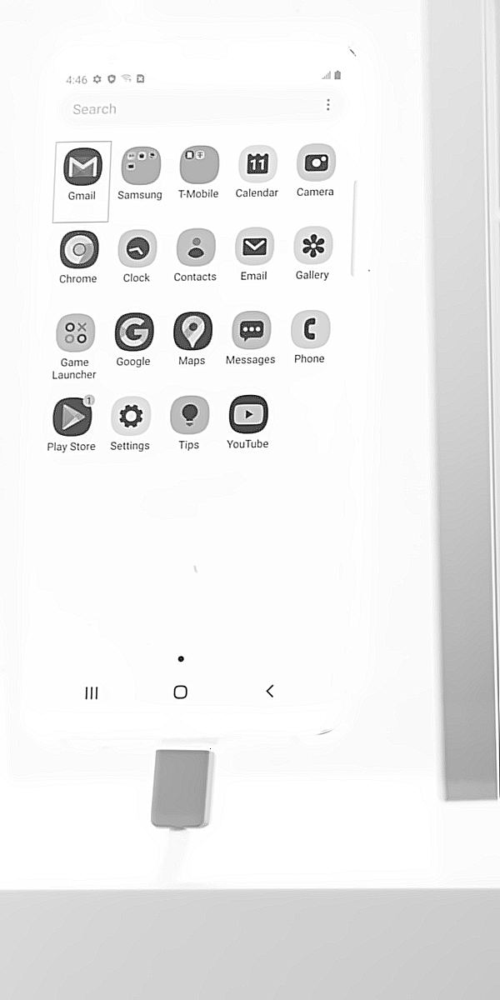
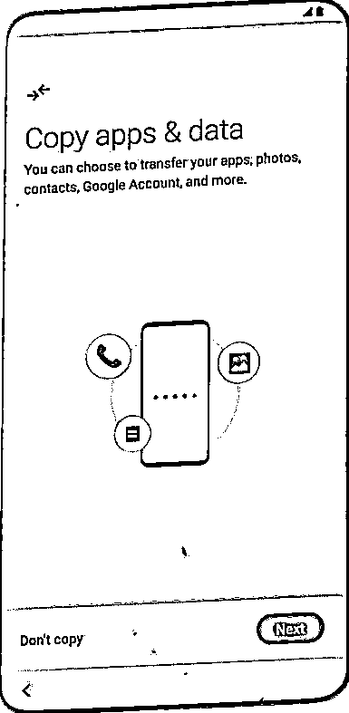
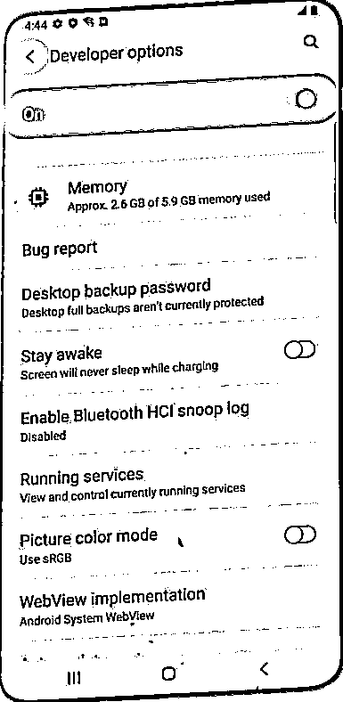
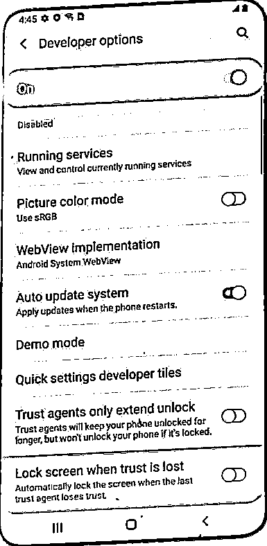
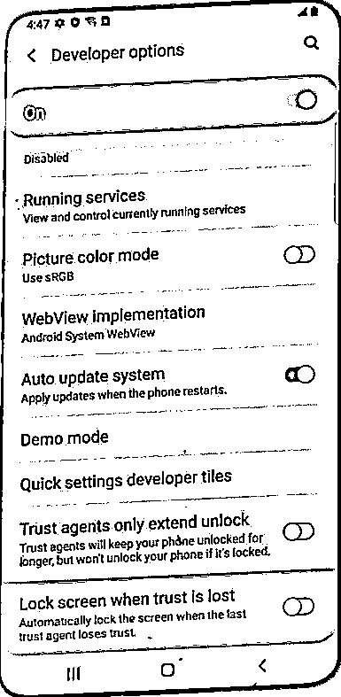
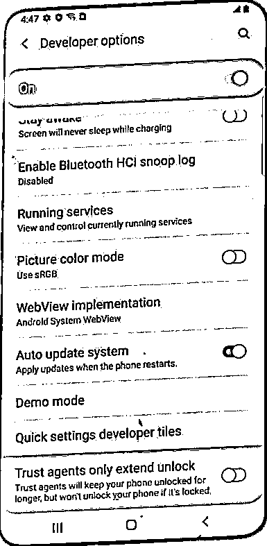

Transform User Experiences: Unleash the Power of AI in Product/Content Search
In today's data-driven world, efficient information retrieval and delivering a seamless user experience are critical for businesses and applications. To address this, the integration of Convolutional Neural Networks (CNNs) and Language Models (LLMs) has emerged as a powerful approach for similarity search. By combining the visual understanding capabilities of CNNs with the semantic comprehension of LLMs, we can greatly enhance the retrieval of relevant information and provide users with a more personalized and engaging experience.
Table of Content
Motivation
In today’s digital era, where vast amounts of data are generated every second, the ability to efficiently search for similar items has become crucial across various industries. For example, in the world of online shopping, retailers strive to provide a seamless and personalized experience to their customers. By employing similarity search techniques, retailers can ensure that customers find products that closely match their preferences and needs. This enables enhanced product discovery, reduces search frictions, and ultimately leads to increased conversions and customer satisfaction. Same thing is happening in fashion/interior design/art industries that are heavily relying on visual information. Similarity search enables users to find visually similar images or products based on their appearance, color, shape, or style. Another example is content recommendation. Streaming platforms, news aggregators, and social media networks, are heavily relying on similarity search algorithms to recommend relevant content to their users. By analyzing user preferences, browsing history, and content features, these platforms can suggest similar movies, articles, or posts that align with a user’s interests.
Whether it’s e-commerce or content recommendation, the concept of similarity search plays a pivotal role in enhancing user experiences and driving business growth. At its core, similarity search involves finding items that are most similar to a given query item. But how to implement similarity search at the practical level? Well, before the advent of advanced AI techniques (LLMs, CNNs), traditional approaches were employed to tackle this problem:
- Keyword-based Search: Match user-entered keywords or phrases against predefined product attributes or metadata. While this approach is simple-to-understand and easy-to-use, it often fell short in capturing the nuanced similarities between products and failed to deliver precise results.
- Manual Tagging and Categorization: Another common method involved manual tagging and categorization of products. Retailers would assign descriptive tags or categories to each product, enabling users to navigate through predefined categories to find similar items. However, this approach is time-consuming and prone to human error, and limited in its ability to handle large and diverse product catalogs.
While these traditional approaches have served as a foundation for similarity search in the retail industry, they have certain limitations. They often rely on manual effort, lack the ability to capture semantic meaning, and struggle to handle large-scale and dynamic datasets. Same thing happened to the project that I have been involved in recently. As a data scientist working for the automation and engineering team, I got assigned a task to find similar screens among thousands of Android device screen images from various models and carriers, I encountered challenges in implementing similarity search. Initially, I attempted to employ OCR for text extraction and subsequent keyword-based similarity comparison. However, this approach proved inadequate as some words cannot be extracted correctly due to the limitation of OCR and thus can’t be used for keywords comparison. To address this limitation, I shifted my focus to comparing pixel values for similarity. While this approach yielded satisfactory results in some cases, it failed when two images are sharing similar layouts but entirely different contents. To overcome these obstacles, I decided to leverage a combination of visual and textual features obtained through pre-trained CNNs and LLMs, alongside the use of FAISS for efficient similarity search with vector DB. This integrated approach proved to be highly effective, allowing me to easily discover the most similar images without concerning about information loss or misinterpretation.
This success also inspired me to write this blog, aiming to unlock the potential for exploring advanced AI techniques that can significantly enhance user experiences in the retail industry and beyond. As an end-user of various e-commerce websites like Macy’s and Bloomingdale’s, I have often encountered frustrating experiences that compelled me to abandon shopping on their platforms due to subpar product searching algorithms. It often felt like these websites lacked an understanding of my preferences, as they consistently failed to provide the products I desired. For instance, when searching for women vintage light blue washed jeans, I would often receive irrelevant results, such as pink, short jeans with holes instead… This browsing experience proves frustrating for customers, as they are forced to invest more time sifting through numerous products in search of the right one. Simultaneously, retailers suffer significant losses, gradually missing out on potential customers who become dissatisfied with the cumbersome search process.
In this blog, I will share the sample code from my personal project, demonstrating how to implement fast similarity search using the powerful combination of CNNs, LLMs, and FAISS.
Initially, my plan was to scrape product images and descriptions from Macy’s to provide a more comprehensive demonstration. However, due to Macy’s policy against web scraping, I opted to use preprocessed and readily available Android sample images instead. It’s important to note that the techniques showcased can be applied to various images or textual contents beyond the Android samples.
CNNs & LLMs in Similarity Search
Convolutional Neural Networks (CNNs) and Large Language Models (LLMs) have revolutionized the fields of natural language processing and computer vision, respectively. These advanced AI techniques have significantly enhanced various applications, including text understanding and image recognition. In this blog post, we will be mainly shedding light on the capabilities and benefits of LLMs and CNNs on transforming the way of information retrieval.
CNNs
CNNs excel at capturing local and global patterns in images by leveraging convolutional layers, pooling operations, and hierarchical feature extraction. These networks are trained on large datasets, learning to automatically identify and extract relevant visual features such as edges, textures, shapes, and object hierarchies.
In similarity search, CNNs enable the comparison of visual similarities between images. By extracting feature representations from images using CNNs, it becomes possible to measure the similarity between two images based on their visual content. This allows for efficient retrieval of visually similar images from a large dataset.
The extracted visual features from CNNs can be further processed and used in various ways for similarity search. One common approach is to represent images as feature vectors, where each vector encodes the learned visual features. These vectors can then be compared using distance metrics, such as Euclidean or cosine distance, to find the most similar images.
LLMs
LLMs are trained on vast amounts of text data, learning the statistical patterns and relationships between words. They excel at tasks such as text classification, sentiment analysis, machine translation, and generating coherent text. By leveraging pre-trained LLMs, we can extract rich textual features that capture the essence and meaning of a text, including its context, sentiment, and intent.
When it comes to similarity search, LLMs enable the comparison of semantic similarities between textual contents. By encoding text into a dense vector representation using LLMs, it becomes possible to measure the similarity between two pieces of text based on their semantic content. This allows for efficient retrieval of documents or text snippets that are semantically similar.
The extracted textual features from LLMs can be processed and combined with extracted visual features from CNNs, to create a more comprehensive representation of data and thus to allow for a more holistic approach to similarity search, capturing both the visual appearance and semantic meaning of descriptions of images or text on images.
An Example with Python and FAISS
FAISS, or Facebook AI Similarity Search, is a powerful library and framework specifically designed for efficient and scalable similarity search on large-scale datasets. Developed by Facebook AI Research, FAISS provides a range of indexing and search algorithms that enable fast and accurate retrieval of similar items.
FAISS is particularly useful when dealing with high-dimensional data, such as image feature vectors or text embeddings. It offers various indexing structures, including the Inverted File (IVF) and Product Quantization (PQ), which enable efficient searching in high-dimensional spaces. One of the key advantages of FAISS is its ability to handle large-scale datasets efficiently. By leveraging techniques like multi-GPU and multi-index, FAISS can index and search billions of vectors with low memory footprint and fast query times. This makes it suitable for similarity search tasks where the dataset size is substantial.
When using FAISS for our similarity search, the first step is to build an index by encoding the feature vectors from the data using LLMs and CNNs. These encoded vectors are then indexed using FAISS to optimize the search process. During retrieval, FAISS employs distance metrics, such as Euclidean or cosine distance, to identify the most similar items based on their feature vectors.
Note: I was following this manual made by Pinecone. It not only offers insights into the inner workings of FAISS but also provides a step-by-step example of transforming sentences into text embeddings using the sentence-BERT library and implementing semantic search. Some sample images I am dealing with:
  
import re
import ssl
import os
import time
import faiss
import torch
import pytesseract
import pandas as pd
import numpy as np
from sentence_transformers import SentenceTransformer
from PIL import Image
from tensorflow.keras.applications import vgg16, vgg19
from tensorflow.keras.applications import resnet50, inception_v3, xception
from tensorflow.keras.preprocessing.image import img_to_array
os.environ['CURL_CA_BUNDLE'] = ''
ssl._create_default_https_context = ssl._create_unverified_context
image_paths = ["Images/" + i for i in os.listdir("Images")]
First, let’s extract visual features. We chose pre-trained VGG16 as the image feature extraction model here, there are also some other options such as VGG19, ResNet, Inception V3, and Xception. Feel free to try them all and see which one performs the best.
# Load the pre-trained VGG16
vgg_16 = vgg16.VGG16(weights="imagenet", include_top=False)
# Extract image features using VGG16
Image_DB_vgg16 = []
for image_path in image_paths:
image = Image.open(image_path).convert('RGB')
# Resize the images to match VGG16 input size
image = image.resize((224, 224))
image = img_to_array(image)
image = vgg16.preprocess_input(image) # Preprocess the images for VGG16
Image_DB_vgg16.append(image)
# Extract and flatten features
database_features_vgg16 = vgg_16.predict(np.array(Image_DB_vgg16))
.reshape((len(Image_DB_vgg16), -1)
Second, let’s get the text embeddings for the text recognized on the images using a combination of OCR technique and pre-trained LLM.
# Extract texts from images using pytesseract
texts = []
for image in image_paths:
texts.append(pytesseract.image_to_string(Image.open(image)))
# remove special chars
cleaned_texts = [re.sub('\W+', ' ', i) for i in texts]
df = pd.DataFrame(columns=["extracted_text"])
df["extracted_text"] = cleaned_texts
data = df["extracted_text"].tolist()
model = SentenceTransformer('bert-base-nli-mean-tokens')
encoded_data = model.encode(data)
Third, we need to normalize the visual features and textual features to the same scale, concatenate and index them:
# normalize & index both visual and textual information
from sklearn.preprocessing import normalize
# normalize the feature vectors so they have same scale
normalized_visual_feature = normalize(database_features_vgg16)
normalized_textual_feature = normalize(encoded_data)
data = np.concatenate((normalized_visual_feature,
normalized_textual_feature), axis=1)
index = faiss.IndexFlatL2(normalized_visual_feature.shape[1])
index.add(data)
Now all the images are indexed, let’s try to retrieve similar images for one sample query image. Before that, we need to process the query image in the way we did to our training images:
# an example
example_image = Image.open("Images/example.png").convert("RGB")
example_image = example_image.resize((224, 224))
example_image = img_to_array(example_image)
example_image = vgg16.preprocess_input(example_image)
visual_feature = vgg_16.predict(np.expand_dims(example_image, axis=0))
visual_feature = visual_feature.reshape((1, -1))
visual_feature = normalize(visual_feature)
text = pytesseract.image_to_string(Image.open(
"Omnibug_Images/R5CT40MNB0P.settings.12.1690405176.534316.png"))
text_feature = model.encode(text).reshape(1,-1)
text_feature = normalize(text_feature)
combined_feature = np.concatenate((visual_feature, text_feature), axis=1)
Searching for 3 similar images from the indexed training images:
index.search(combined_feature, 3)
# Output:
(array([[0.03547053, 0.0561883 , 0.0561883 ]], dtype=float32),
array([[440, 476, 803]]))
The first array displays the similarity scores between query image and retrieved images. The second array gives the indices of retrieved images. Because the sample image also comes from training set, so first image we retrieved is the same as the sample image. The second and third ones are almost the same as the query image.
  Well, that’s it! So easy to implement right?
By utilizing CNNs and LLMs, we built a information retrieval system so easily and robustly. In e-commerce or fashion industries that are heavily relying on visual or visual+textual information for product/content search, we can also deploy the same technique to help users find visually and textually similar products, leading to improved product recommendations and conversions.
If you win in understanding customers, then you win the business! I believe that by leveraging the power of these advanced AI techniques, we can create more intelligent and intuitive systems that meet the evolving needs of uses in an increasingly digital world.